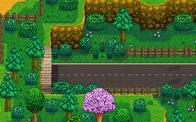

The Tunnel
Jump to navigation
Jump to search
The Tunnel is a small (33x6) underground area accessed from the lower elevation section of the Backwoods. To reach it, follow the road west from the Bus Stop and continue west along the road through the Backwoods.
The only feature of interest in the Tunnel is a panel near the middle of the Tunnel that can be opened using a Battery Pack. Secret Note #22 hints at the existence of this panel, as does a Lost Book. Opening the panel starts "The Mysterious Qi" quest, eventually providing access to the Casino.

The entrance to the Tunnel from the Backwoods
Tips
- Artisan Equipment can be safely placed inside the Tunnel without worrying about Villagers destroying it by walking through it. It also counts as an interior so will allow the use of Garden Pots.
| Locations | |
|---|---|
| Locations | Backwoods • Beach • Bus Stop • Calico Desert • Cindersap Forest • Farm • Farm Cave • Farm Pond • Graveyard • Ginger Island • Mastery Cave • Minecart • Mines • Mountain • Mutant Bug Lair • Pelican Town • Quarry • Quarry Mine • Railroad • Secret Woods • Sewers • Skull Cavern • Summit • Tunnel • Volcano Dungeon • Witch's Swamp |